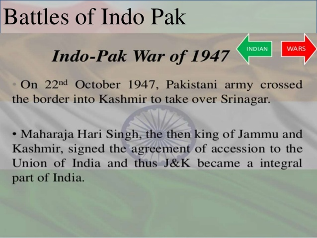
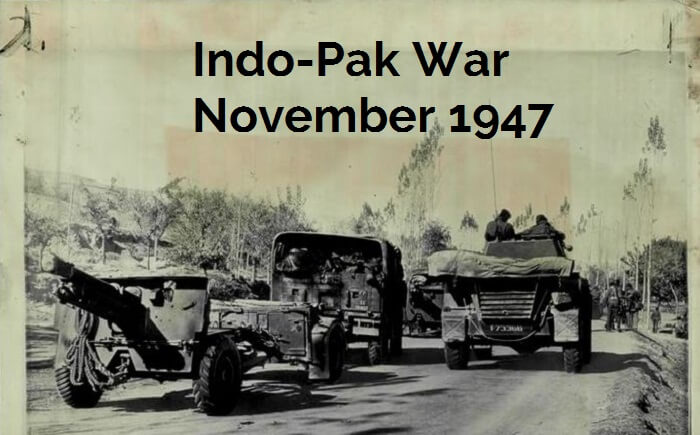
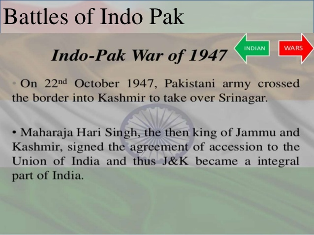
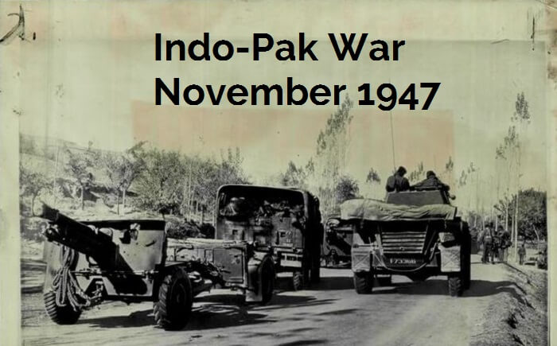
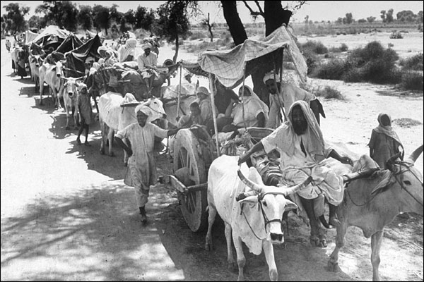
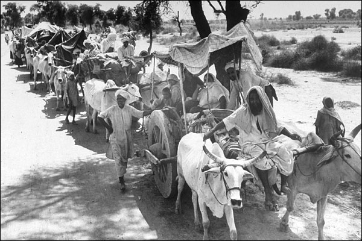
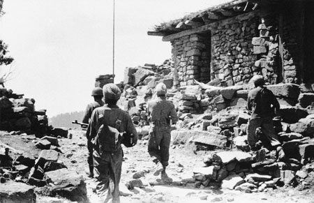
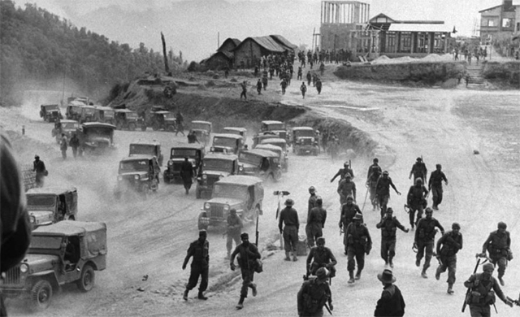
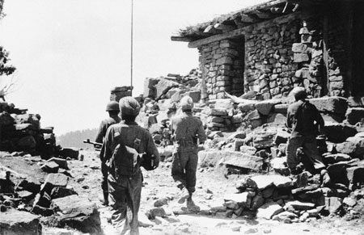
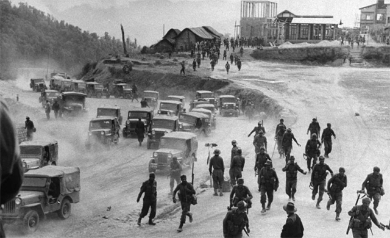

DESHKVEER
"ONE MEN ARMY"
“Our Flag Does Not Fly Because The Wind Moves It,
It Flies With The Last Breath Of Each Soldier Who Died Protecting It.”
“Our Flag Does Not Fly Because The Wind Moves It,
It Flies With The Last Breath Of Each Soldier Who Died Protecting It.”
Main articles: Indo-Pakistani War of 1947 and Kashmir conflict Hari Singh (September 1895 – 26 April 1961) was the last ruling Maharaja of the princely state of Jammu and Kashmir in India. Immediately after independence, tensions between India and Pakistan began to boil over, and the first of three full-scale wars between the two nations broke out over the then princely state of Kashmir. The Maharaja of Kashmir wanted to have a standstill position. Since Kashmir was a Muslim majority state, Pakistan wanted to make Kashmir a Pakistani territory. As a result, Pakistan invaded Kashmir on 22 October 1947, causing Maharaja Hari Singh to look to India, specifically to Lord Mountbatten of Burma, the governor general, for help. He signed the Instrument of Accession to India on 26 October 1947. Indian troops were airlifted to Srinagar from 27 October dawn onwards.This contingent included General Thimayya who distinguished himself in the operation and in the years that followed became a Chief of the Indian Army. An intense war was waged across the state and former comrades found themselves fighting each other. Pakistan suffered significant losses. Its forces were stopped on the line formed which is now called LOC (Line of Control).[citation needed] An uneasy UN sponsored peace returned by the end of 1948 with Indian and Pakistani soldiers facing each other directly on the Line of Control, which has since divided Indian-held Kashmir from Pakistan-held Kashmir. A number of UN resolutions (38–47) were passed calling for a plebiscite to be held in Kashmir to determine accession to India or Pakistan only after Pakistan withdrew its army from Kashmir.[28] A precondition to the resolution was for Pakistan and India to return to a state of "as was" prior to the conflict. Pakistan would withdraw all tribesmen and Pakistani nationals brought in to fight in Kashmir. With Pakistan refusing to pull back there could be no further dialogue on fulfilling the UN resolution.[29][30] Tensions between India and Pakistan, largely over Kashmir, have never been entirely eliminated.
The Indo-Pakistani War of 1947–1948, sometimes known as the First Kashmir War, was fought between India and Pakistan over the princely state of Kashmir and Jammu from 1947 to 1948. It was the first of four Indo-Pakistan Wars fought between the two newly independent nations. Pakistan precipitated the war a few weeks after independence by launching tribal lashkar (militia) from Waziristan,[22] in an effort to secure Kashmir, the future of which hung in the balance. The inconclusive result of the war still affects the geopolitics of both countries. The Maharaja faced an uprising by his Muslim subjects in Poonch, and lost control of the western districts of his kingdom. On 22 October 1947, Pakistan's Pashtun tribal militias crossed the border of the state.[23][24] These local tribal militias and irregular Pakistani forces moved to take Srinagar, but on reaching Baramulla, they took to plunder and stalled. Hari Singh made a plea to India for assistance, and help was offered, but it was subject to his signing an Instrument of Accession to India.[24] The war was initially fought by the Jammu and Kashmir State Forces[25] and by tribal militias from the Frontier Tribal Areas adjoining the North-West Frontier Province.[26] Following the accession of the state to India on 26 October 1947, Indian troops were air-lifted to Srinagar, the state capital. The British commanding officers initially refused the entry of Pakistani troops into the conflict, citing the accession of the state to India.[24] However, later in 1948, they relented and the Pakistani armies entered the war after this.[26] The fronts solidified gradually along what came to be known as the Line of Control. A formal cease-fire was declared at 23:59 on the night of 31 December 1948. The result of the war was inconclusive. However, most neutral assessments agree that India was the victor of the war as it was able to successfully defend[28] about two-thirds of the Kashmir including Kashmir valley, Jammu and Ladakh.
 



 

 



Contact Me:
Email:Deshbhagat007@gmail.com
Call:+(91) 8147174067
Follow Me: